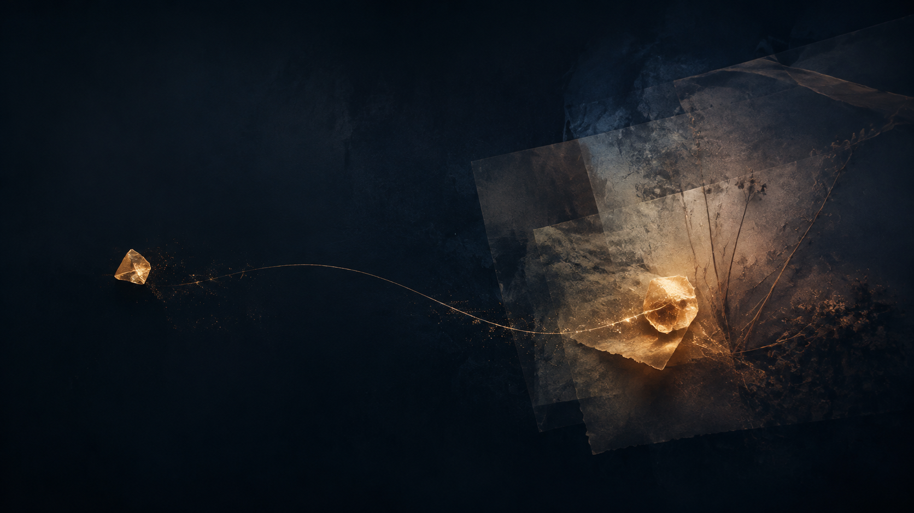

通过语音、文字、图片和 Moment，自然地留下生活。
Product vision
人生，如何展开
让过去、现在与可能的未来，逐渐成为一条可以被理解的轨迹。
Product vision
让过去、现在与可能的未来，逐渐成为一条可以被理解的轨迹。
Meridian is
一个围绕人生如何展开而设计的长期个人产品。
通过语音、文字、图片和 Moment，自然地留下生活。
看见当前状态、情绪、目标与正在发生的变化。
回望人生阶段、人物、关系和关键选择。
让命理解释与真实人生持续交叉、验证和校准。
追踪正在变近或变远的未来分支。
让过去的记忆、预测和决定重新进入现在。
随手说一句今天发生了什么，Meridian 逐渐识别人、关系、事件、情绪、目标与选择。
Not a static profile
面对压力时倾向于维持现状，避免失去确定性。
开始反复提到学习、变化和更大的自主空间。
职业选择的评价标准正在发生结构性改变。
项目受阻，开始怀疑当前环境是否适合自己。
相似压力在数周记录中反复出现。
新的投入开始成为稳定行为，而非短期冲动。
四条记录被理解为同一场职业转变的不同阶段。
不是证明“准不准”，而是理解这套先验框架在这个具体的人生中意味着什么。
每条 Branch 都有前提、信号、投入、代价与风险，并随着现实持续增强或衰减。

“三个月前你说，如果到年底还是没有明显成长，你会认真考虑离开。现在你还这么想吗？”
开始记住用户，并连接少量近期片段。
识别重复出现的人、问题、目标和早期变化。
真正拥有一个人变化轨迹的历史，并能理解现在从何而来。
聊天只是入口，不是产品本身。
数据只为看见变化，不为制造人生 KPI。
日记、命理、目标与未来共享同一套上下文。
命理是先验，Future Branch 是可能性，现实与选择始终优先。
而今天正在发生的一切，又正在把我带向哪里？